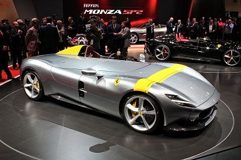
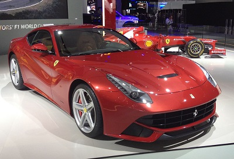

Le autovetture Ferrari sono celebri anche per la loro esclusività, tant'è che l'azienda ha deciso di limitare la produzione per mantenere questa caratteristica. Tra i progettisti e le carrozzerie che hanno collaborato con la Ferrari ci sono Pininfarina, Scaglietti, Bertone e Vignale. I motori impiegati nelle autovetture Ferrari sono prevalentemente dei V8 e V12.
Relativamente al colore, fin dagli anni venti le automobili da corsa italiane erano verniciate di rosso. Questo era il colore consueto per le vetture italiane che gareggiavano in campionati automobilistici in base a un provvedimento preso negli anni tra le due guerre mondiali dall'associazione che in seguito venne chiamata FIA. Nello schema della federazione, tra le altre, le auto francesi erano blu, le tedesche bianche e le inglesi verdi.
La tonalità del rosso è gradualmente passata dal rosso scuro (famoso come «rosso Alfa») a una tinta notevolmente più accesa, nota come «rosso corsa». Tale colorazione è rimasta immutata per le Ferrari di serie, mentre per quelle di Formula 1 dopo l'acquisizione da parte del Gruppo Fiat ci sono state variazioni di tonalità del rosso, volute dai vari sponsor. Va però sottolineato che la Ferrari, come per altro imposto dallo stesso Enzo, ha sempre mantenuto il colore rosso imposto nei primi anni, per mantenere la nazionalità del marchio
| Ferrari Monza SP1 | Ferrari F12 Berlinetta |
|---|---|
|  |  |